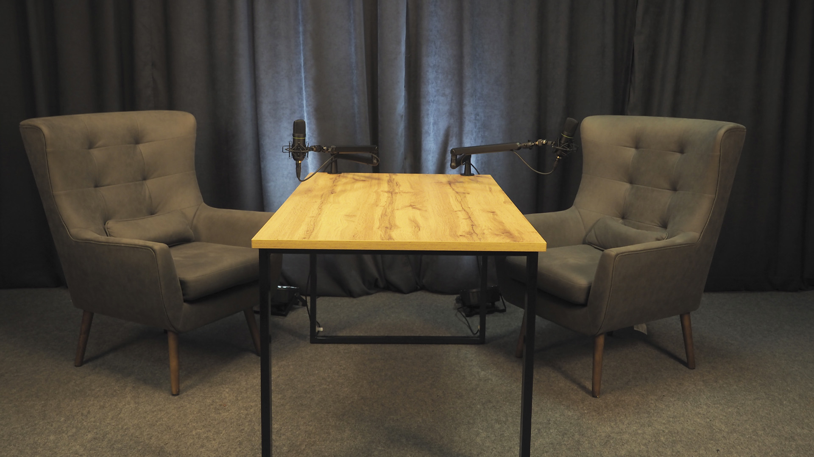
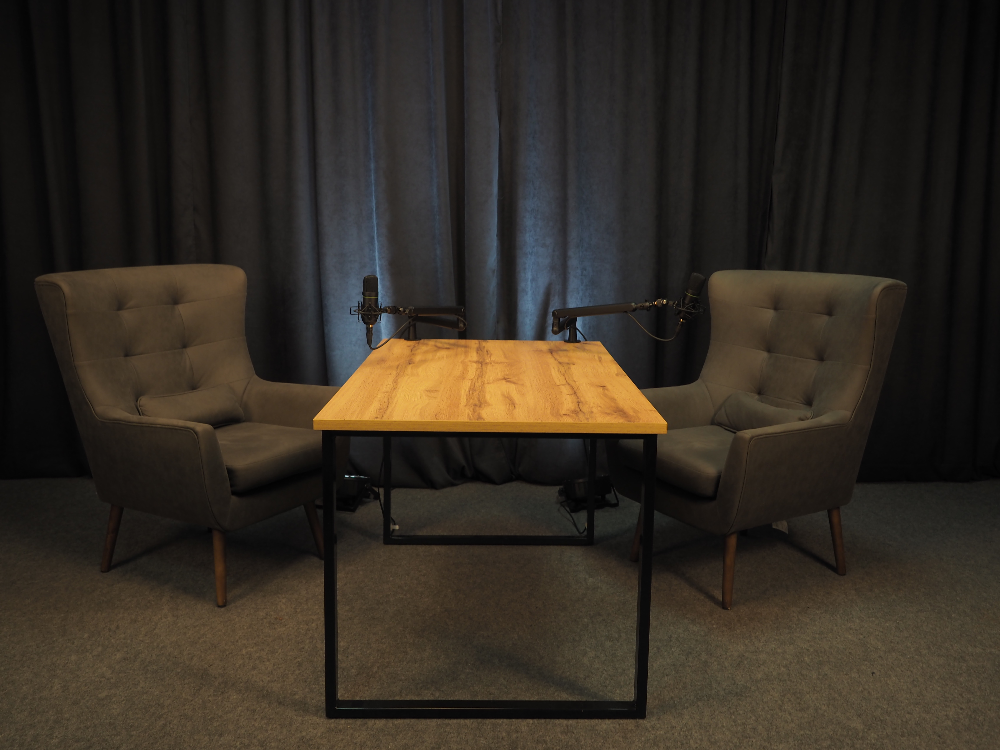
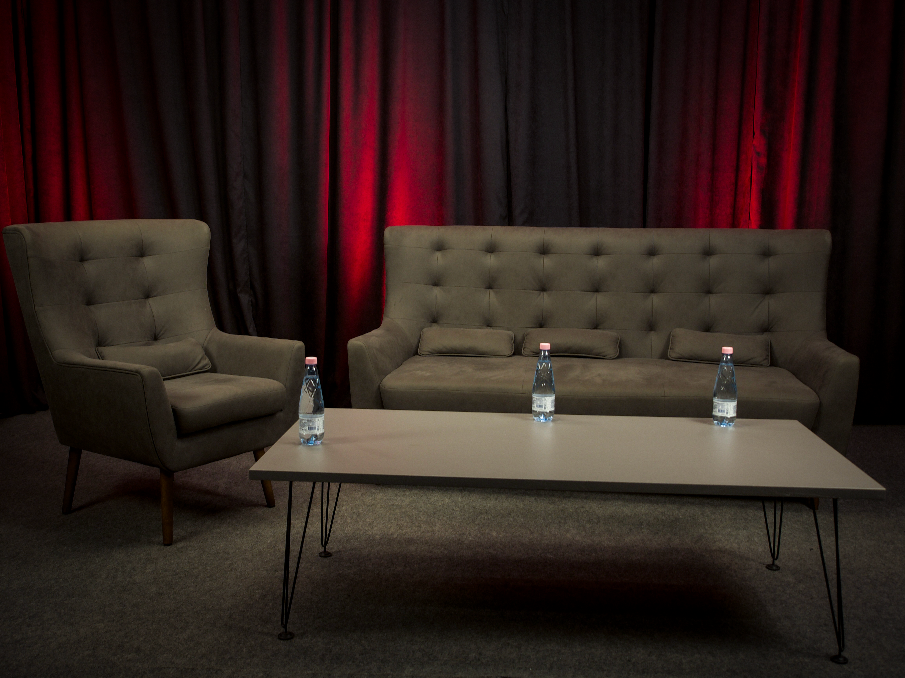
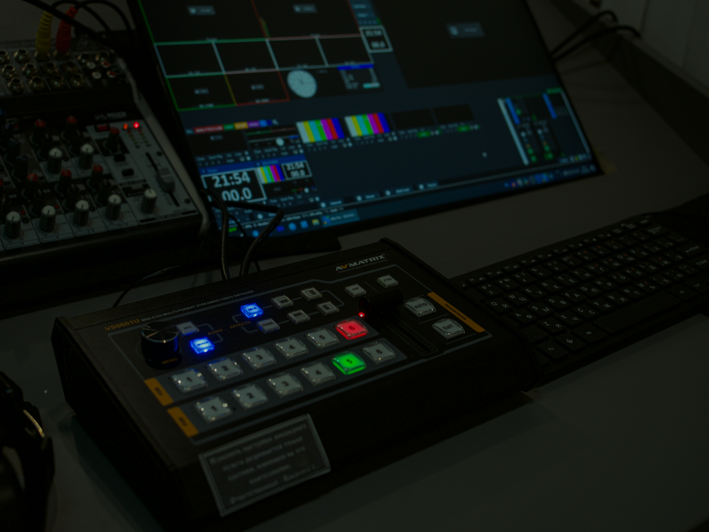

Студия-конструктор
Пространство подстраивается под любой формат записи: подкаст, лекция или Shorts. Легко меняем расстановку и свет под вашу конкретную задачу.

Профессиональные зоны для подкастов, лекций и Shorts с регулируемым светом, реквизитом и студийным звуком — от 2 000 ₽/час.
Каждый проект для нас уникален. Мы адаптируемся под ваши нужды, предлагая персонализированные решения.
Пространство подстраивается под любой формат записи: подкаст, лекция или Shorts. Легко меняем расстановку и свет под вашу конкретную задачу.
Профессиональный арсенал: микрофоны Mackie и Audio-Technica, камеры Panasonic 4K и регулируемый свет в каждой зоне.
Между дублями можно сыграть в PS5, выпить кофе и просто отдохнуть на диване. Лучшие идеи рождаются не под запись.
Запись от 2 до 4 спикеров на 1–3 камеры, работа оператора и чистый студийный звук в каждом дубле.
Монтаж исходника, изготовление тизеров и нарезка Reels — чтобы контент продолжал работать после записи.
Профессиональная трансляция на площадки: оператор-режиссёр, мониторинг стабильности и запись эфира с передачей исходников.
Фиксированная стоимость. Доплаты — только за дополнительные опции. Листайте карусель, чтобы сравнить все пакеты.
Одно пространство — десятки сценариев. Мы меняем расстановку мебели и цвет света под формат вашей записи: от соло-подкаста до ток-шоу.






Профессиональный арсенал: микрофоны Mackie и Audio-Technica, камеры Panasonic 4K, регулируемый свет.

MACKIE EM-91C × 2 — студийные микрофоны для двух спикеров
Наушники с микрофоном Audio-Technica — решение для 3–4 спикеров

Panasonic AG-CX10 × 2 — основная съёмка
Panasonic 4K × 1 — дополнительный ракурс

Полный комплект света с регулировкой под каждую зону
Реквизит, стол, кресла и диван — всё готово к кадру

Трансляция на площадки и мониторинг стабильности сигнала
Мультитрансляция на несколько платформ — как дополнительная опция
Четыре шага от заявки до готовых материалов
Обсуждаем формат и задачу, подбираем зону: подкаст, лекция, Shorts или трансляция.
Меняем расстановку и свет под вашу задачу, настраиваем микрофоны и камеры, проводим проверку.
Оператор ведёт камеры и звук, режиссёр следит за дублями. Вы сосредоточены на контенте.
Отдаём все исходники после записи. Монтаж, тизер и нарезка Reels — по желанию, отдельными опциями.
Расскажите о проекте — подберём зону и пакет, пришлём смету и свободные слоты в течение 24 часов